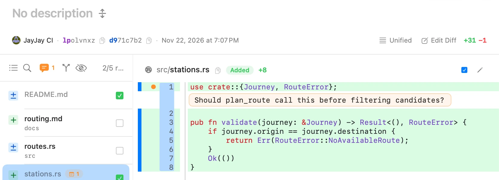
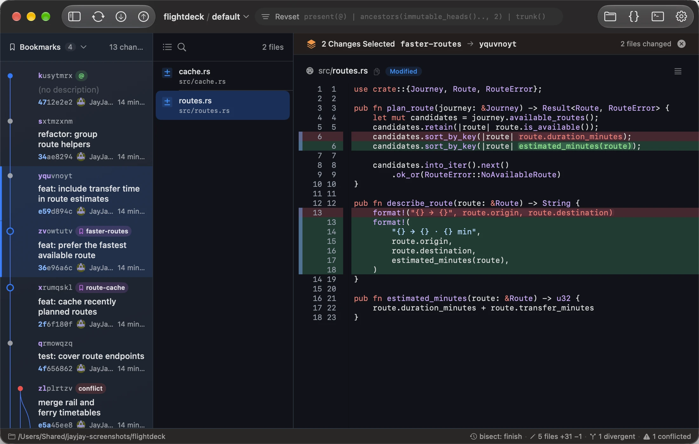
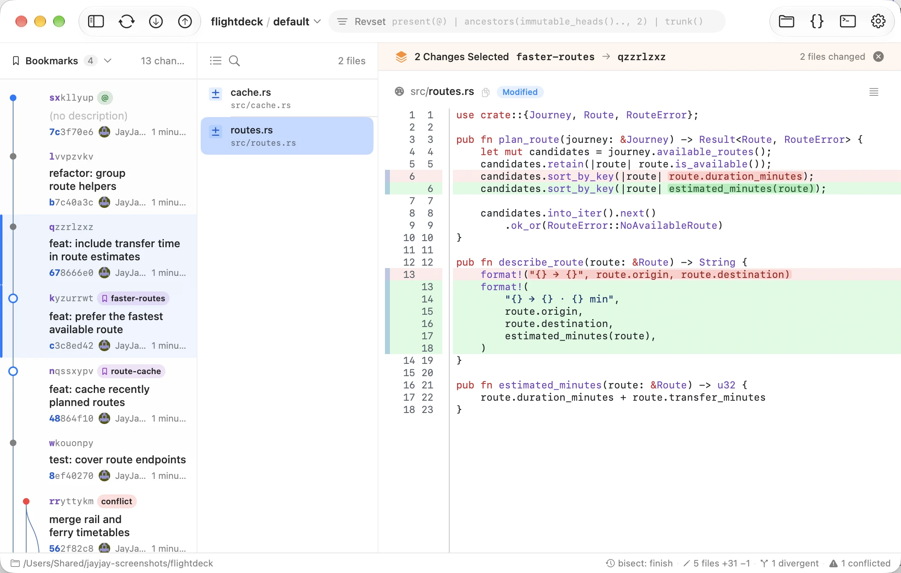
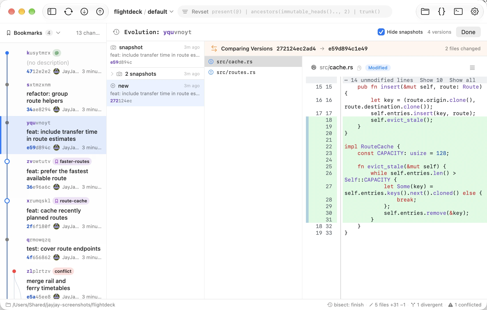
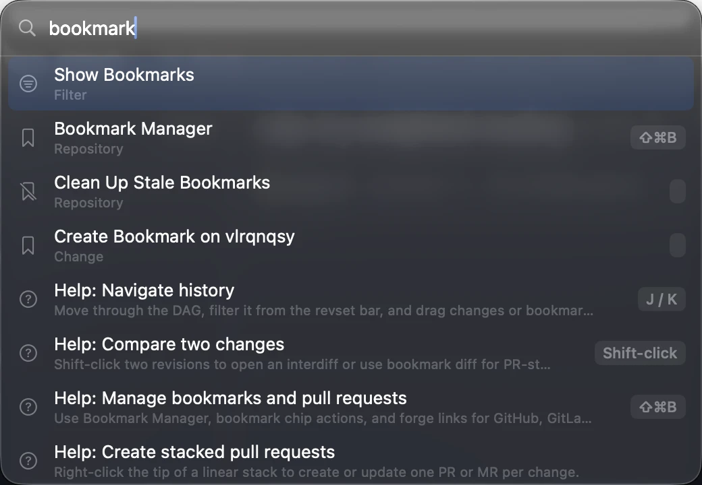
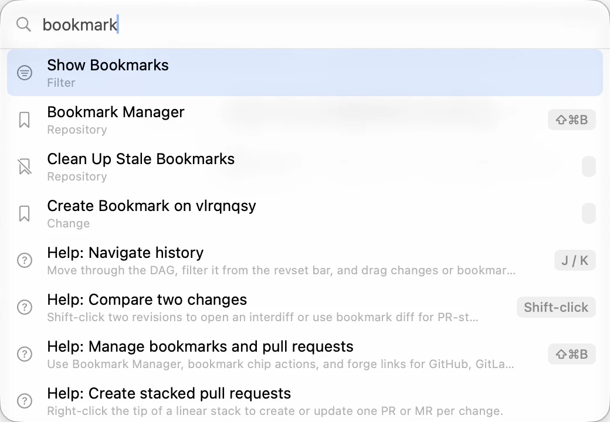

为什么做 JayJay
为 jj 而生，不是给 git 套壳
Jujutsu 的模型比 git 更好，但大多数图形客户端要么还在用 git 分支的思路，要么就是套了壳的 Web 应用。JayJay 的起点只有一个问题：为什么没有一个真正原生、真正懂 jj 的客户端？
所以它有自己的取舍，而且很快：每个工作流只提供一种原生做法，一切按 jj 的思路来。JayJay 完全免费，由开发者为开发者打造。每个细节都用了心，甚至藏了一个彩蛋，你能找到吗？
为 Jujutsu 打造的快速客户端，键盘操作顺手。变更图、差异、拆分、冲突，一个窗口全搞定。

变更、书签、revset、可变历史，全按 jj 的思路来，不硬套 git 分支。
macOS 用 SwiftUI，Linux 用 GPUI，底层是同一个直接链接 jj-lib 的 Rust 核心。不解析命令行输出，也不套 Web 视图。
无需订阅，也不收集你的仓库数据。匿名的版本和系统统计可在设置中关闭。
统一或并排视图、文件树、tree-sitter 高亮和行内变更，并为图片、Markdown、Notebook、CSV/TSV、SARIF 和二进制 plist 提供富预览。


按空格键标记文件已评审，或点击差异块旁的色条，只标记那一部分。已评审的差异块在编辑和变基后依然有效，备注也始终跟着那一行。
编程智能体可以通过 jayjay CLI 读取你的备注并标记文件。用 npx skills add hewigovens/jayjay --skill jayjay 安装 JayJay 技能，或在 macOS 上从“设置”>“集成”安装。


从变更的任意文件里挑出差异块或单独的行，拆成一个干净的子变更或并行变更。
按住 Shift 点击两个变更、两个书签，或 PR 分支和它的基线，就能看清两者之间到底改了什么。遇到分叉的变更，用比较分叉版本决定留下哪一个。


右键点击线性堆叠的顶端，选择创建 / 更新堆叠 PR。JayJay 会为每个变更命名分支并推送，再为每个变更创建一个 GitHub PR、GitLab MR 或 Cursor Origin PR，并设置好相互依赖的基线。
可以在“设置”中登录 GitHub 和 GitLab，也可以使用现有的 CLI 登录或环境变量令牌。Cursor Origin 使用你的 origin auth login 凭据。
在内置合并编辑器里逐块选择左侧、右侧或基线，也可以直接改冲突标记；没解决完也能先保存。还可以交给你配置好的外部工具。


变更的每一个快照都按时间排好，可筛选，可一键恢复。撤销变基、找回丢失的工作，都不用手动翻操作日志。


每次放弃、变基、拆分都会记录为一次操作。点击状态栏里最近的操作，或按 ⌘⇧U，打开操作日志，把仓库恢复到之前的任意时刻。
分叉合并分道显示、最短变更 ID，还有带预设标签的 revset 筛选。
把书签拖到任意变更上即可移动。按远程显示领先、落后和分叉状态。
查看文件每一行最后由哪个变更修改。
由 Codex、Claude 或 Apple Intelligence 起草变更说明。
VS Code、VSCodium、Zed、Xcode、Vim、终端、iTerm2 和 Ghostty。
与 Git 共存的 jj 仓库和 Git LFS 开箱即用；子模块会显示它指向的提交。
JayJay Diff 在浏览器里评审 GitHub Pull Request，已评审标记在 force-push 之后依然保留。
在命令面板里模糊搜索任意操作，输入 help split 了解功能，或加 ! 前缀直接运行 jj 命令并查看输出。


macOS 26 或更高版本 · Apple 芯片 · 已签名并公证
# Homebrew 首次安装时信任该 cask $ brew install --cask hewigovens/tap/jayjay $ jayjay ~/my-project
或下载应用。
x86_64 & aarch64 · AppImage、Debian/Ubuntu、Arch
# Debian 包或 AppImage；已验证校验和 $ curl -fsSL https://jayjay.hewig.dev/install.sh | bash # Arch：AUR $ yay -S jayjay-appimage
安装包在 GitHub Releases 上。
Windows 10 1903 或更高版本 · x64 & arm64 · 测试版
# 在以管理员身份运行的 PowerShell 中添加一次 JayJay 源 > winget source add --name jayjay --arg https://pkgs.hewig.dev/winget --type Microsoft.Rest --explicit # 安装 JayJay 和 jj > winget install hewig.JayJay --source jayjay; winget install jj-vcs.jj
使用 winget upgrade hewig.JayJay --source jayjay 升级。也可以从 Microsoft Store 获取（x64），或下载便携版 ZIP。
JayJay 的源代码是公开的：在 GitHub 上查看代码。
Jujutsu 的模型比 git 更好，但大多数图形客户端要么还在用 git 分支的思路，要么就是套了壳的 Web 应用。JayJay 的起点只有一个问题：为什么没有一个真正原生、真正懂 jj 的客户端？
所以它有自己的取舍，而且很快：每个工作流只提供一种原生做法，一切按 jj 的思路来。JayJay 完全免费，由开发者为开发者打造。每个细节都用了心，甚至藏了一个彩蛋，你能找到吗？
Jujutsu (jj) 的原生图形客户端，支持 macOS 和 Linux。Jujutsu 是一个重新构想 git 模型的版本控制系统，使用可变历史，用变更取代提交，用书签取代分支。JayJay 使用 Rust（直接封装 jj-lib，不解析 CLI 输出）和 SwiftUI 构建。
有。JayJay 是适用于 macOS 和 Linux 的全功能原生 jj 图形客户端：DAG 可视化、带 tree-sitter 高亮的统一和并排差异、interdiff、差异编辑模式、文件逐行追溯、一键解决冲突，以及所有常用 jj 操作（squash、split、absorb、revert、merge、duplicate、describe、abandon），无需记忆命令参数。
最简单的方式是 brew install --cask hewigovens/tap/jayjay，Homebrew 6.0 会在首次安装时信任该 cask。也可以从 GitHub Releases 下载已签名并公证的应用。需要 macOS 26 或更高版本。
支持。在 DAG 中按住 Shift 点击两个修订，即可像 PR 一样比较它们：使用同样的统一和并排视图及词级高亮，呈现两个变更内容之间的差异。
支持。一键切换统一和并排视图，两者都使用 tree-sitter 语法高亮和词级高亮。图片文件（PNG、JPG、SVG、HEIC 等）以实际的前后图片显示；当源文本不够直观时，Markdown、Notebook、CSV/TSV、SARIF 和二进制属性列表还有富预览。
能，这就是差异编辑模式。选择文件、差异块或行范围，然后把它们拆分到新的子变更或并行变更中。在工作副本上，还可以右键 →“放弃所选行”来丢弃个别修改。
它是 CLI 的补充，而不是替代。DAG 图、可视化差异评审、差异编辑、演化查看器和书签管理器在图形界面中要容易得多。命令面板（⌘ ⇧ P）可以搜索操作和本地帮助，并支持 jj（或 !）前缀，在窗口内运行原始 jj 命令。
免费，源代码公开（source-available）。macOS 应用采用 BSL 1.1 许可：可以免费使用、复刻、修改和再分发，只有在付费应用商店分发才需要许可。它将于 2030-03-23 转为 Apache-2.0。Rust crate 已经是 Apache-2.0。
运行 curl -fsSL https://jayjay.hewig.dev/install.sh | bash。该脚本会先验证校验和，然后在基于 apt 的系统上安装最新的 Debian 包，在其他 x86_64 或 aarch64 系统上安装 AppImage；再次运行即可升级。在 Arch Linux 上，请安装 AUR 中的 jayjay-appimage，例如 yay -S jayjay-appimage。添加 --beta 可在有比稳定版更新的测试版时安装它。之后运行 jayjay /path/to/repo，或在窗口中打开仓库。指南（英文）列出了支持的内容。
为 x86_64 或 aarch64 安装 AUR 中的 jayjay-appimage，例如 yay -S jayjay-appimage。自定义 pacman 仓库已停用；通过 AUR 升级前，请从 /etc/pacman.conf 中删除整个 [jayjay] 小节。要试用 AppImage 测试版，请先卸载已安装的软件包，然后使用 --beta 运行 Linux 安装脚本。指南（英文）中有详细步骤。
Linux 和 Windows 使用 GPUI 界面，并与 macOS 共享 Rust 核心。Linux 版以 AppImage、Debian/Ubuntu 包和 AUR 包的形式提供，支持 x86_64 和 aarch64；详见指南（英文）。Windows 支持处于测试阶段。在 x64 或 arm64 上，先用 winget source add --name jayjay --arg https://pkgs.hewig.dev/winget --type Microsoft.Rest --explicit 添加 JayJay 的 WinGet 源，再运行 winget install hewig.JayJay --source jayjay；升级使用 winget upgrade hewig.JayJay --source jayjay。Windows x64 版也可从 Microsoft Store 安装，便携版 ZIP 在 GitHub Releases 上。Windows 需要 Windows 10 版本 1903 或更高版本，或 Windows 11，并需另行安装 jj（winget install jj-vcs.jj）。Store 版由 Store 管理更新；便携版 ZIP 没有自动更新功能。
可以，macOS 应用和 Linux 版都支持。选择 File > Open Remote Repository…，从 SSH 配置中挑选主机，再浏览到仓库所在文件夹即可。远程主机可以是 macOS、Linux 或 Windows；首次连接时，JayJay 会在主机上安装一个小巧的辅助程序，主机需支持密钥或 agent 认证。审阅备注只保存在你自己的机器上。详见指南（英文）。